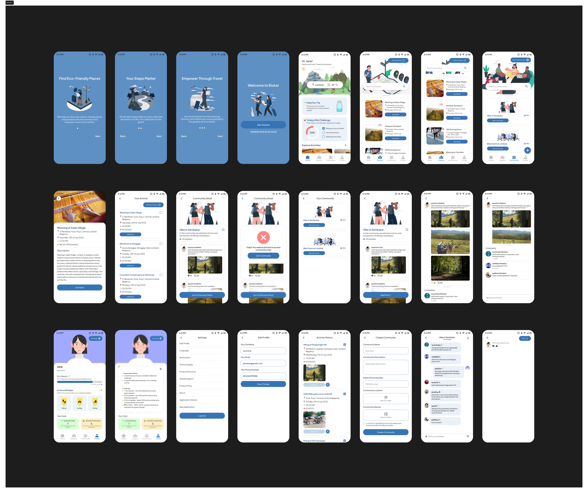

Eloka

Project Overview
Eloka is an eco-friendly tourism mobile app concept designed to promote sustainable travel experiences in Lombok, Nusa Tenggara Barat. The application helps travelers discover environmentally responsible destinations, local cultural experiences, and eco-conscious activities while encouraging more sustainable tourism behavior.
The project was created as an individual portfolio exploration focused on combining tourism, sustainability, and digital experience design into one cohesive platform. The application emphasizes responsible travel practices through informative content, intuitive navigation, and destination recommendations centered around environmental awareness.
As the UI/UX Designer, I handled the full design process from research and ideation to wireframing and high-fidelity prototyping. The project also became an opportunity to explore how interface design can influence users toward more conscious and sustainable decisions.
The Problem
Lack of Sustainable Tourism Awareness
Many tourism platforms focus primarily on popular destinations and convenience, while providing little information about sustainability, environmental impact, or responsible travel practices.
Travelers often struggle to identify eco-friendly destinations, sustainable accommodations, and activities that positively support local communities. The challenge was to design a tourism experience that not only inspires exploration but also encourages users to travel more responsibly.
Design Process
The design process focused on creating a calming and informative mobile experience that balances travel inspiration with sustainability education through accessible and visually engaging interactions.
User Research
Conducted research about tourism behavior, eco-friendly travel trends, and user expectations toward travel applications. Explored how sustainability could be integrated naturally into the user journey without overwhelming users.
User Flow & Information Architecture
Designed user flows focused on destination discovery, eco-tourism exploration, and activity recommendations. Organized information architecture to make sustainable travel options easier to access and understand.
Wireframing
Created low-fidelity wireframes to structure navigation, destination browsing, and activity recommendation flows while prioritizing clarity and ease of use for travelers.

Visual Design
Developed a clean and calming visual direction inspired by nature and tropical landscapes. The interface uses earthy tones, spacious layouts, rounded components, and immersive imagery to create a relaxing and environmentally conscious travel experience.
High-Fidelity Prototype
Built interactive high-fidelity prototypes in Figma to visualize the final mobile experience, including destination discovery, eco-friendly activity recommendations, and sustainability-focused interactions.

My Contributions
- Conducted user research related to sustainable tourism experiences.
- Designed user flows for eco-tourism destination exploration.
- Created mobile UI designs focused on calm and immersive interactions.
- Applied sustainable design principles into the visual and interaction system.
- Developed high-fidelity prototypes using Figma.